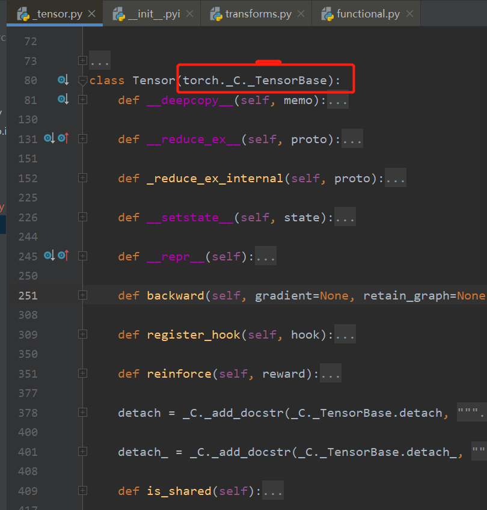
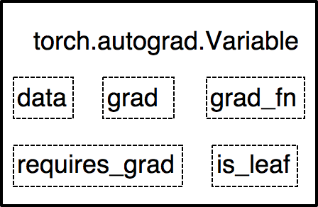
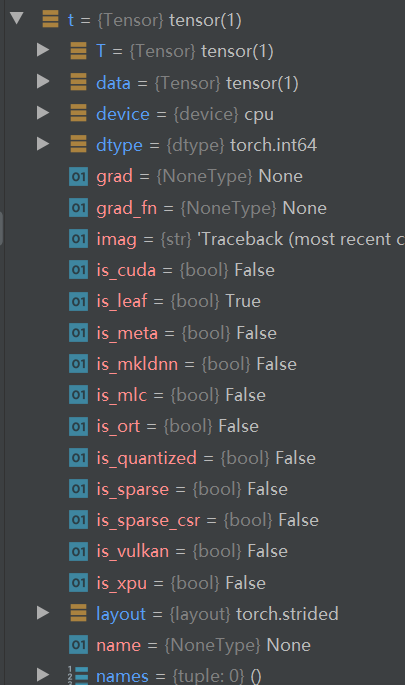

2.3 核心数据结构——Tensor
张量初认识
经过前两小节的铺垫，大家一定对pytorch有了初步认识，本小节就展开讲pytorch的核心数据结构——Tensor（张量）。Tensor中文翻译张量，是一个词不达意的名字。张量在不同学科中有不同的意义，在深度学习中张量表示的是一个多维数组，它是标量、向量、矩阵的拓展。标量是零维张量，向量是一维张量，矩阵是二维张量，一个RGB图像数组就是一个三维张量，第一维是图像高，第二维是图像的宽，第三维是图像颜色通道。
在pytorch中，有两个张量的相关概念极其容易混淆，分别是torch.Tensor和torch.tensor。其实，通过命名规范，可知道torch.Tensor是一个类, torch.tensor是一个函数。通常我们调用torch.tensor进行创建张量，而不直接调用torch.Tensor类进行创建。为了进一步区分两者，我们来看看它们代码实现。
torch.Tensor：类定义与torch/_tensor.py#L80，它继承torch._C._TensorBase，这里看到_C就知道要接触C++代码了。

跳转到torch/C/\_init__.pyi #L839 可以看到：
# Defined in torch/csrc/autograd/python_variable.cpp
class _TensorBase(metaclass=_TensorMeta):
requires_grad: _bool
shape: Size
张量类的底层实现是在python_variable.cpp代码中，感兴趣的朋友可以进一步探究。
torch.tensor：pytorch的一个函数，用于将数据变为张量形式的数据，例如list, tuple, NumPy ndarray, scalar等。同样的，它的底层实现也是C++代码，我们可以跳转到函数定义，发现是torch_C_VariableFunctions.pyi文件（2.1节中介绍了.pyi文件是用于pyi文件是python用来校验数据类型的，其底层实现在对应的cpp代码中。
后续将不再区分Tensor和tensor，主要用小写tensor表示张量这个数据类型（数据结构）。
张量的作用
tensor之于pytorch等同于ndarray之于numpy，它是pytorch中最核心的数据结构，用于表达各类数据，如输入数据、模型的参数、模型的特征图、模型的输出等。这里边有一个很重要的数据，就是模型的参数。对于模型的参数，我们需要它进行更新，而更新是需要记录它的梯度，梯度的记录功能正是被张量所实现的（求梯度是autograd实现的）。
张量的历史演变
讲tensor结构之前，还需要介绍一小段历史，那就是Variable与Tensor。在0.4.0版本之前，Tensor需要经过Variable的包装才能实现自动求导。从0.4.0版本开始，torch.Tensor与torch.autograd.Variable合并，torch.Tensor拥有了跟踪历史操作的功能。虽然Variable仍可用，但Variable返回值已经是一个Tensor（原来返回值是Variable），所以今后无需再用Variable包装Tensor。
虽然Variable的概念已经被摒弃，但是了解其数据结构对理解Tensor还是有帮助的。Variable不仅能对Tensor的包装，而且能记录生成Tensor的运算（这是自动求导的关键）。在Variable对象中主要包含5个属性：data，grad，grad_fn，is_leaf，requires_grad

- data: 保存的是具体数据，即被包装的Tensor；
- grad: data对应的梯度，形状与data一致；
- grad_fn: 记录创建该Tensor时用到的Function，该Function在反向传播计算中使用，因此是自动求导的关键；
- requires_grad: 用来指示是否需要梯度；
- is_leaf: 用来指示是否是叶子结点，为叶子结点时，反向传播结束，其梯度仍会保存，非叶子结点的梯度被释放，以节省内存。
从Variable的主要属性中可以发现，除了data外，grad，grad_fn，is_leaf和requires_grad都是为计算梯度服务，所以Variable在torch.autogard包中自然不难理解。
但是我们的数据载体是tensor，每次需要自动求导，都要用Variable包装，这明显太过繁琐，于是PyTorch从0.4.0版将torch.Tensor与torch.autograd.Variable合并。
张量的结构
tensor是一个类，我们先来认识它有哪些属性，再去观察它有哪些方法函数可使用。
Tensor主要有以下八个主要属性，data，dtype，shape，device，grad，grad_fn，is_leaf，requires_grad。

data：多维数组，最核心的属性，其它属性都是为其服务的;
dtype：多维数组的数据类型，tensor数据类型如下，常用到的三种已经用红框标注出来；
shape：多维数组的形状;
device: tensor所在的设备，cpu或cuda;
grad，grad_fn，is_leaf和requires_grad就与Variable一样，都是梯度计算中所用到的。
张量的属性还有很多，大家可以通过Pycharm的debug功能进行查看

更多关于张量的概念背景，请查看官方文档，下一小节，我们进行张量的操作介绍。